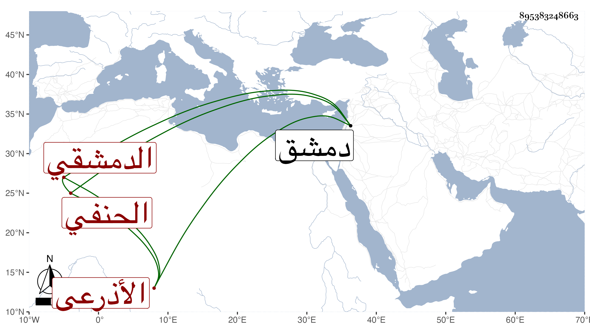

0902Sakhawi.DawLamic.ITO20230111-ara1.EIS1600.895383248663
Biography ID: 895383248663
9
أحمد بن أبي العز بن أحمد بن أبي العز بن صلح بن وهيب فخر الدين الأذرعي الأصل الدمشقي الحنفي ابن الكشك ويعرف بابن الثور بفتح المثلثة سمع من أول البخاري إلى الوتر علي الحجار ومن إسحاق الآمدي وعبد القادر بن الملوك وغيرهما . مات في صفر سنة إحدى عن ثمانين سنة إلا أياما . ذكره شيخنا في معجمه وقال أنه أجاز له في سنة سبع وتسعين ، زاد في الأنباء وكان أحد العدول بدمشق ، والمقريزي في عقوده باختصار .
